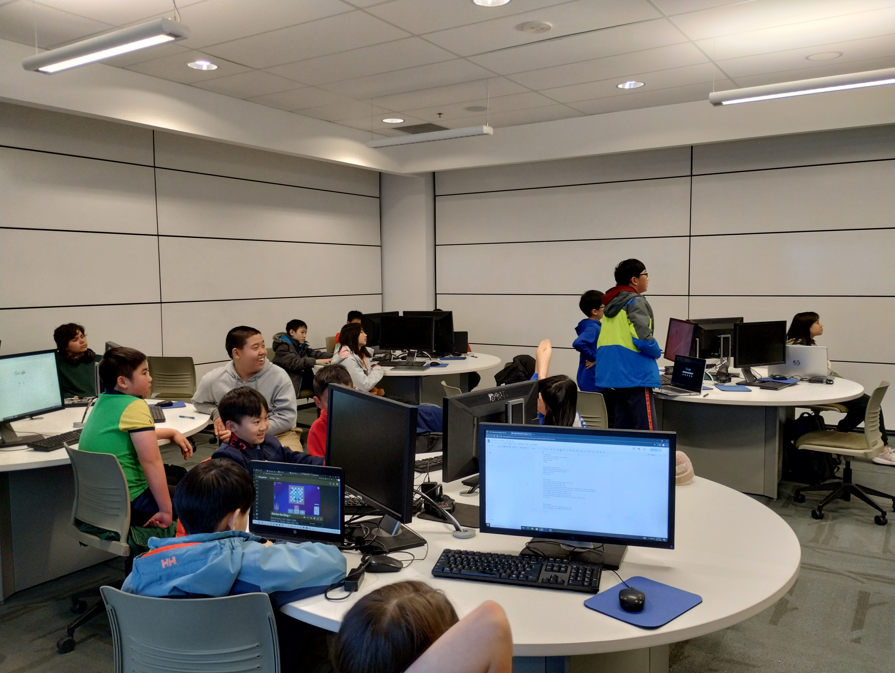
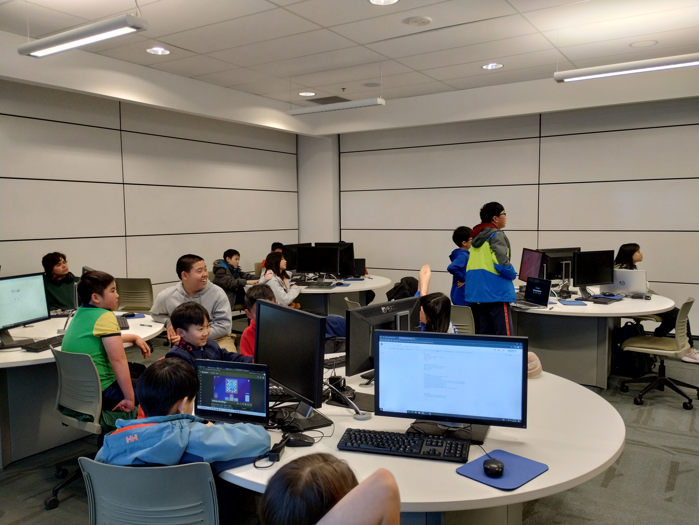
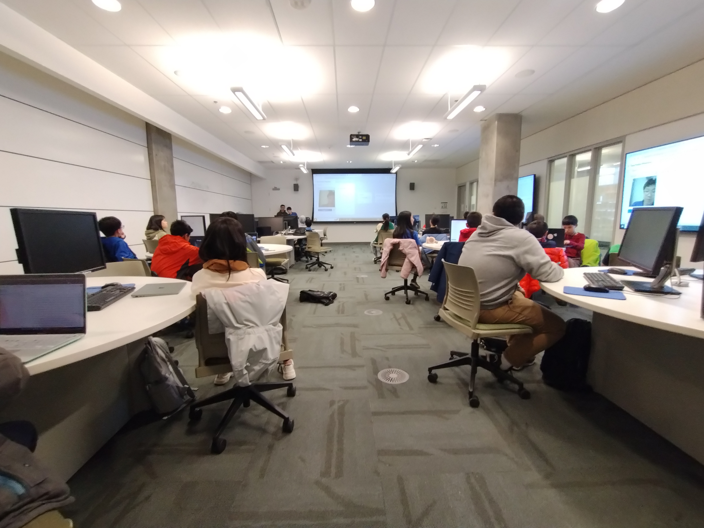
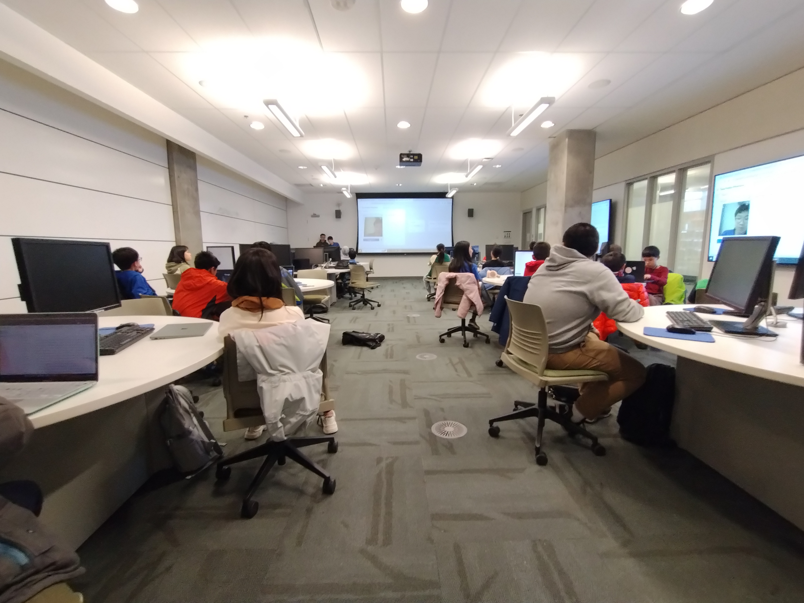
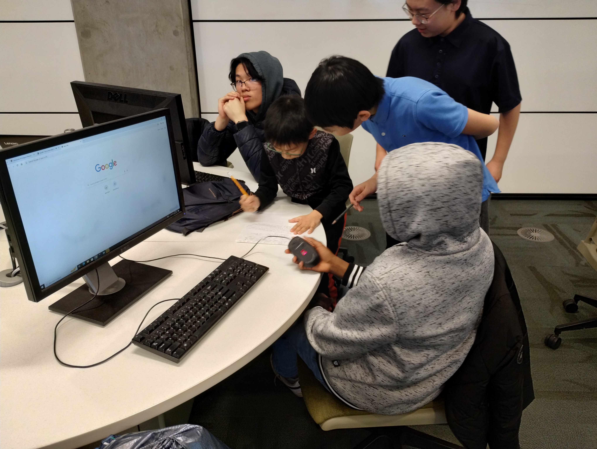
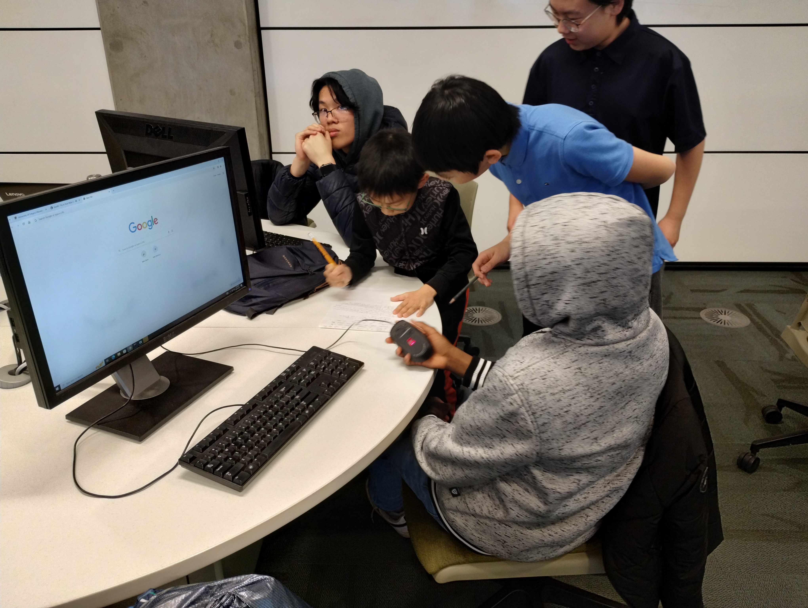

AI Course
Futurlign hosted a Python and ML course at the University of Calgary,
targeted towards youth between grades 6-9. Within this course,
individuals were able to gain insight into the inner workings of AI,
learn how to program in Python, and create a miniature AI themselves.
 

 

 
